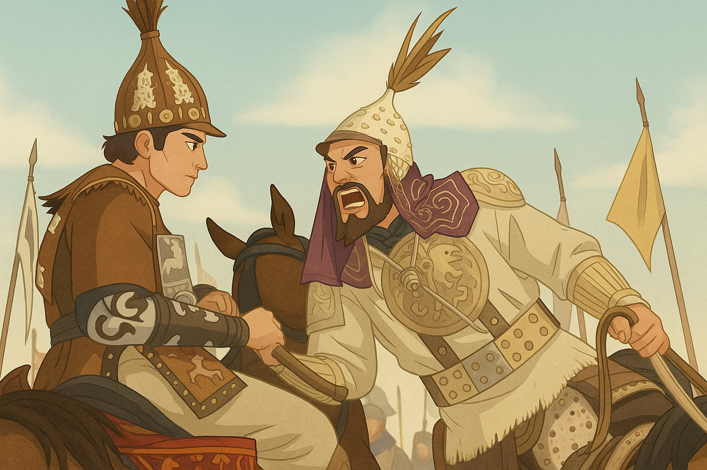
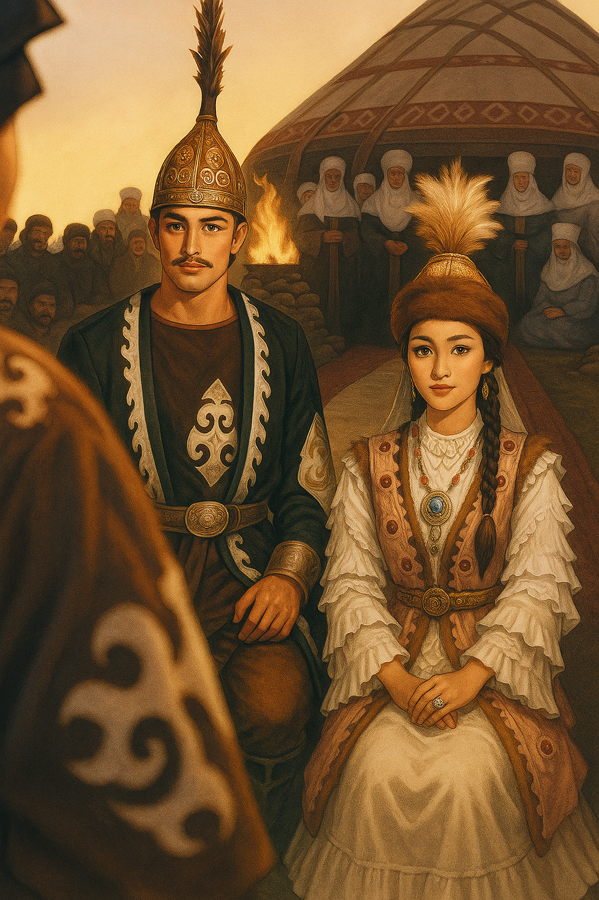
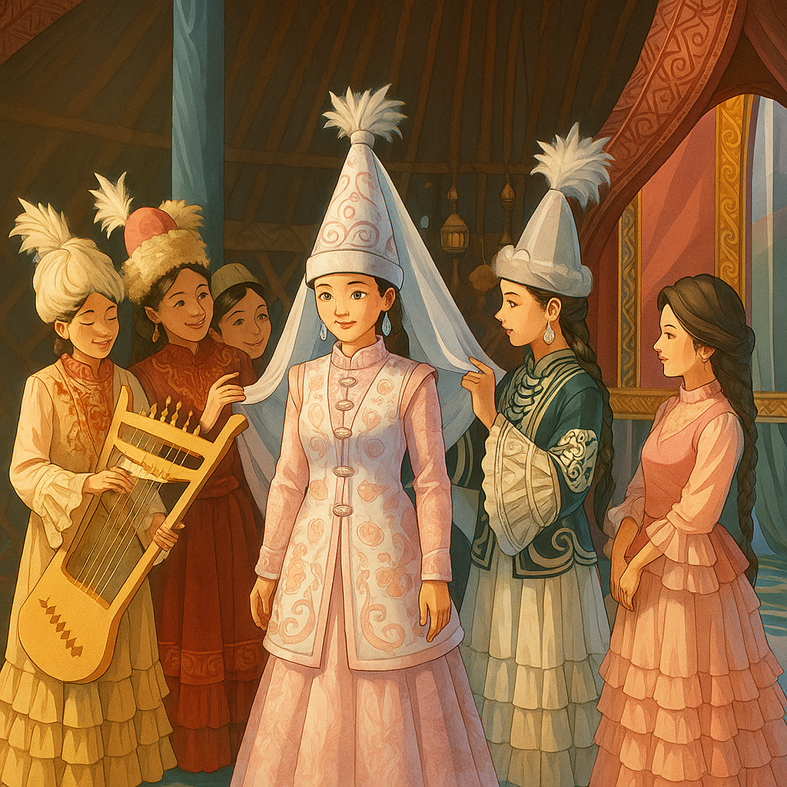
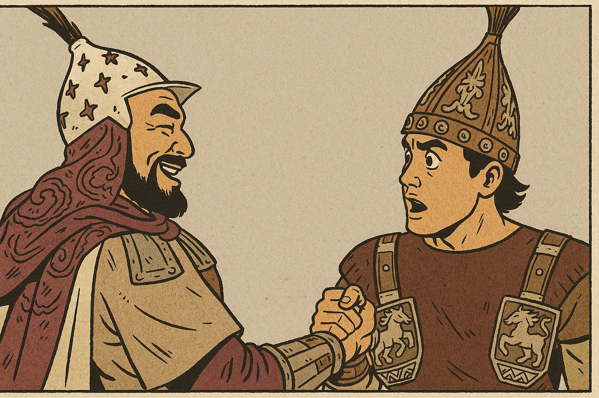

Әлқисса, Сансызбай он жеті жасқа келді. Сегіз жылдай ағасынан хабар болмаған соң Төлегенді сағынып іздемекші болады. Қару-жарағын асынып атасына келіп, Төлегенді іздеуге рұқсат сұрады.
Сол күнде атасының көзі көр болып, көңілі жер болып, Төлегеннің қасіретінен санамен сарғайып, қайғыменен қарайып, тұрмастан жатады екен.
Сансызбайдың сөзін естіп зар жылап батасын береді.
– Бақытын ашқын баламның,
Жаратқан Алла бір Құдай,
Бір өзіңе аманат.
Разылық бермей жіберіп,
Төлегеннен айырылдым.
Жолың болсын, бар, балам,
Тапсырдым сені Аллаға.
Іздеп келгін ағаңды.
Атасы рұқсат берген соң,
Батасын алып Сансызбай,
Ер Шегені басшы қып,
Амандасып айырылып,
Қоштасып жұрты қалады.
Төлегенді іздеп Сансызбай
Сапарға басын салады.
Әлқисса, Шеге мен Сансызбай бірнеше күн жол жүріп, Жайыққа келеді. Сырлыбайдың ауылын шарлап келе жатып бір белге шықса, бір ауылдың үстінде топырлаған көп атты адамды көреді.
2
Бұл жиынның мән-жайын білейін деп анадайдан көрінген қойшыға келіп жолығады.
Қойшы айтты: «Бұл – Сырлыбай деген ханның ауылы. Сырлыбайдың Жібек деген асқан бір сұлу қызы бар еді. Жібектің сұлулығын естіген қалмақтың Қорен деген ханы тоғыз мың әскерімен шектінің үстін басып: «Жібекті қалыңдыққа бермесең, еліңді шабамын», – деді. Қалмаққа әлі келмейтін болған соң Сырлыбай Жібекті бермек болды. Сонда Жібек әкесіне арыз қылып: «Шынымен мені қалмаққа бермек болсаң, тым болмаса қырық күн тойын, отыз күн ойын қылып ұзат», – деді. Осы күні Жібектің тойы бітіп, ойынының басталғанына үш күн болды» – деді. «Жібек бұрын күйеуге берілген жоқ па еді?» – деп Шеге сұрады. Қойшы: «Жібектің Төлеген деген күйеуі бар еді. Қособаның көлі деген жерде оны Бекежен деген қарақшы өлтірді. Оған биыл сегіз жыл болды», – деді. Бұл сөзді естіген соң-ақ Сансызбай жылап жүре берді. Шеге Сансызбайдың артынан жүрді.
Сансызбай сонда жылады,
Көзінің жасын бұлады.
«Бауырың өлді», – деген соң,
Heшe мықты болса да,
Қайтіп шыдап тұрады.
«Артық туған көкешім,
Бұл дүниеден өтіпсің,
Шын дүниеге жетіпсің.
Қайран да менің көкешім,
Өлгеніңді есітіп,
Көзімнің жасын тыймадым».

3
Жібек қыз әсемдігімен, ақылымен, шеберлігімен еліне танымал. Төлеген жігіт батырлығымен, шешендігімен көзге түседі. Екеуі бір-бірін көрген сәтте ғашық болады.
Сонда Сансызбай айтты: «Жібекті қолымыздан келсе алып кетелік, қолымыздан келмесе жүзін көріп, жолығып кетелік. Сіз Жібекті тауып, күй-жайын біліп келіңіз?» – деп. Екеуі Сырлыбайдың ауылына қарай жүрді. Жиылған көпке жақын келді. Сонда Сансызбай: «Жиылған тамашаны өзім барып көріп, барлап біліп келейін» – деді де, атын Шегеге беріп, өзі жаяу топтың ішіне кіріп кетті. Ойынды тамашалап аралап жүрсе, бір үлкен үйден зарлаған дауыс естіді. Үйдің қасына барса мынадай зар екен:
Жібектің зары:
– Жайықтың суы ылай-ай,
Көр болды көзім жылай-ай.
Төлеген сынды мырзадан
Айырдың өзің, Құдай-ай.
4
Әлқисса, Сансызбай зарлап отырған әйелдің Жібек екенін таныды да, қайтадан жүгіріп Шегеге келіп, Жібектен бір жауап алып бер деп айтқаны:
«Айналайын Шеге аға,
Жібек сынды жеңгеме
Жұмсадым сізді мен, аға.
Жалғыз-ақ арыз сөзім бар,
Қыз Жібектей жеңгемнен
Бір жауап әкеп бер, аға!»
Батыр туған Шеге ақын,
Өлең айтқан ақ үйдің
Тұсына таман келеді.
Әлқисса, қалың қолды аралап, үлкен ақ үйге Шеге жақындап келсе, үйдің ішінен зарлаған дауыс естіпті. Құлағын салып тыңдаса, мына сөзді айтып зарлаған Жібек екен:
«Әуелі бас қосқаным жағалбайлы,
Жылқысын көптігінен баға алмайды.
Өлгені Төлегеннің рас болса,
Құдайым Қыз Жібекті неге алмайды?
Сол елде сері жігіт жоқ па, Тәңірі-ай,
Жесірін іздеп келіп неге алмайды?»
Шеге мен Жібектің айтысқаны
Әлқисса, Шеге Жібектің тұсына жақындап келеді. Мұңды болып отырған Жібекті көреді. Жігіт болып өлең айтып, Жібекпен таныспақшы болады.
Шеге ақын:
– Естіп ем осы тойды сіздікі деп,
Жарқыным, не себептен болдың мұңлы?
Жібек:
– Көргендей жол бейнетін жүзің сарық,
Тұсыма қалың топты келдің жарып.
Торға түскен тұйғындай пенде болып,
Айырылған ел-жұртынан мен бір ғаріп.
Шегенің сөзі:
– Бітіпті хор қызындай саған көрік,
Сүйегім әр сөзіңе барады еріп.
Жарқыным, қалайша боп түстің торға?
Мәнісін айтыңызшы, есітелік.
Жібек:
– Алланың үкіміне жүрмін көніп,
Зар болдым жаққан шырақ отым сөніп.
Құдайым айырған соң қосағымнан,
Отырмын жау қалмаққа пенде болып.
Шегенің сауалы:
– Қайын ата, қайын анаң қай рудан,
Есімі күйеуіңнің кім болады?
6
Жібек:
– Қайын атам аты – Базарбай
Жағалбайлы – руы.
Төлеген – оның баласы,
Ілгері еді патшадан
Ақылының данасы.
Қайран да Тәңірім, қайтейін,
Болмады аз күн жүруі.
Қайын енем атын айтайын
Алпыс жасар Қамқадай.
Тірі болса Сансызбай
Ержетер уақыты боп еді.
Біздей ғаріп міскінді
Неге бір іздеп келмейді?
«Елімнің ақын көсемі
Батыр Шеге», – деп еді.
Сонда Шеге сөйлейді:
– Сансызбайға басшы боп,
Іздеп келген өзіңді
Ақын Шегең мен, – дейді.
Әккі болған Қыз Жібек:
«Алдап жүрген біреу», – деп,
Бұл сөзіне сенбейді.
Сонда Жібек сөйледі:
– Шын айтқан болсаң, әй, аға,
Соңыңда жүріп өлейін.
7
Сансызбай қайда, көрсетші?
Айналайын ағажан,
Сөзіңе сонда сенейін.
«Жалғыз қайның келді», – деп,
Батыр туған Шеге ақын,
Жібекке хабар береді.
– Алтыннан соққан қияғым,
Күмістен соққан тұяғым,
Құдай қалай ұқсатқан
Көкесіне сыяғын.
Жаратқан Алла жар болып,
Жанды ғой өшкен шырағым.
Ашылсаңшы, қабағым,
Өлгенім тіріліп келіп тұр,
Жарылсаңшы, жүрегім.
– Мені алғалы кеп жатқан жау қалмақтың
Екі тұлпар аты бар, білгін, – дейді.
Қара ағаш кезеңінен жол асады,
Сол жолда мені тосып тұрғын, – дейді.
Құдай оңдап, тұлпардың мінсем бірін,
Ертең түсте сол жерде көргін, – дейді.
Біздің ел ертең тұра көшер деймін,
Түннен-ақ үйдің бауын шешер деймін.
Құдай біздің тілекті берсе егер,
Шырағы жау қалмақтың өшер деймін.


2. Біліп ал
Жібек жырындағы маңызды оқиғалар мен фактілер:
Жыр XV-XVI ғасырларда пайда болған
Қыз Жібек - лирикалық-эпикалық жыр
Негізгі тақырыбы - махаббат пен адалдық
Жырда қазақтың дәстүрлі тұрмысы, салт-дәстүрі көрініс тапқан
Жібек жыры қандай ғасырда пайда болған?

3. Сауал
Жібек қыздың ерекше қасиеттері қандай?
Төлеген жігіттің қандай қасиеттері бар?
Жібек пен Төлегеннің арасында не болды?
4. Сөздік
Жыр - поэзиялық шығарма, әдебиеттің өлеңмен жазылатын түрі.
Лирикалық - сезім, эмоция, ішкі әлемді бейнелейтін.
Эпикалық - оқиғаны, тарихи құбылысты баяндайтын.
Махаббат - адамдар арасындағы қуатты жанашырлық сезімі.
"Эпикалық" сөзінің мағынасы қандай?
5. Тірек сөздер
Төмендегі сөздерді қолданып, Жібек жыры туралы қысқаша шығарма жазыңыз:
махаббат
қиыншылық
адалдық
кедергі
жыр
Мәтінді жазыңыз:
6. Оқиғаларды ретімен орналастыр
Жібек пен Төлегеннің кездесуі
Жібектің қашып кетуі
Төлегеннің Жібекті іздеуі
Жібектің қайтуы
Дұрыс ретті құрастырыңыз:
7. Кейіпкерлер сөздерін сәйкестендіру
Кейіпкерлерді олардың сөздерімен сәйкестендіріңіз: